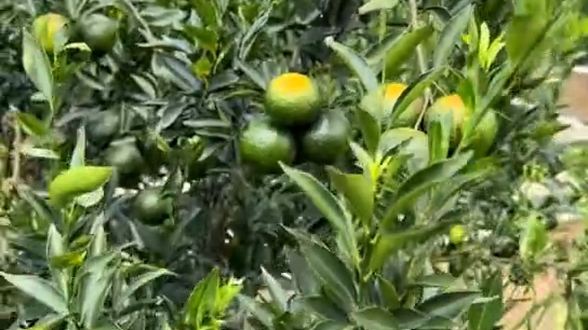
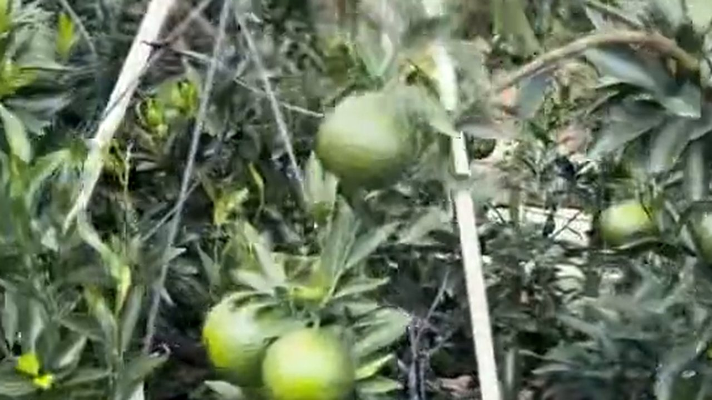
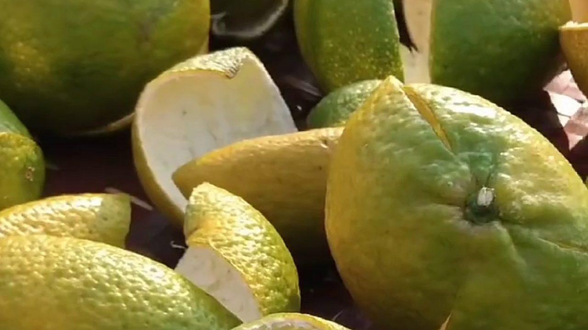
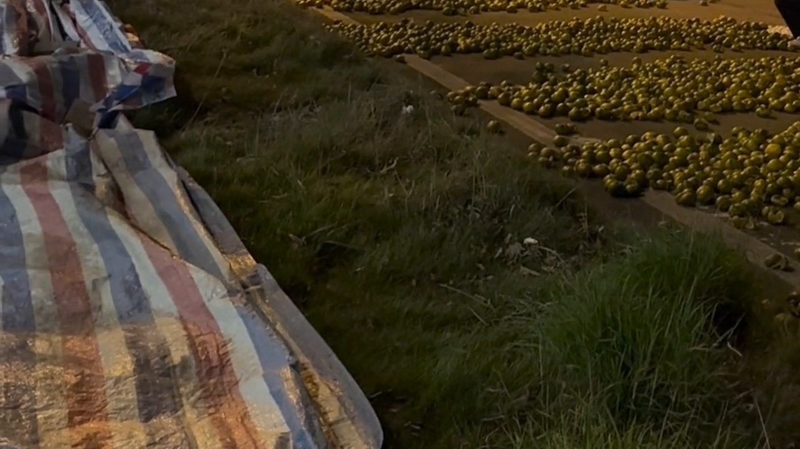

凌晨三點的新會，白天被太陽曬透的柑園還沒醒。可在溯源區的棚架底下，那些青柑已經在枝頭上掛了整整一個夏天——再過一個多月，它們才會變成皮。
這天一早，滢滢姐帶著我去看果。同行的還有做了二十多年茶枝柑的果農根叔。他說了一句話，我記到現在：「一棵柑樹要長三年才結果，一片皮要等三年才叫陳皮。你急，它不急。」
一、棚架下的青柑：油室已經鼓起來了

走進果園，先看到的是頭頂上一整片銀灰色的網。棚架＋防蟲網，這是新會這幾年規模化果園的標準做法：擋風、擋蟲、擋過強的日曬，讓果子在穩定的環境裡長。
枝頭上的青柑，皮色還是青綠，但如果你湊近看，表皮上一粒粒細小的油室已經鼓起來了——那就是日後香氣的來源。根叔摘了一顆，指甲在皮上一劃，一股清冽的柑香立刻散出來。
「你聞到嘅香，就係油室。油室生得飽，日後陳出嚟嘅皮先夠香。所以呢個時候最唔可以急——一急，果未夠月，皮就薄，油室就空。」
二、一棵柑樹要長三年才結果

很多人以為果樹是「種下去就有果」。根叔笑了：育苗三年、掛果三年，前面那三年一分錢收入都沒有。
這不是哪家的說法，是寫進新會陳皮炮製技藝（二〇二一年列入第五批國家級非物質文化遺產代表性項目名錄，編號 Ⅸ-3）裡的口訣：三年育苗、三年掛果、三批採收、三個品種、三瓣開皮、三年曬皮、三級分皮、三年陳化、長久貯存。九個「三」，講的都是同一件事：這行的錢，是用時間換的。
「一畝地好年景收三四千斤鮮果，地頭價兩三蚊一斤。扣肥料、人工、租地，一年落三四千蚊。颱風一來，全白做。」
「所以你年年都留幾行等大紅。」
「留。青柑價高我都唔全摘——摘晒，後面就冇大紅皮喇。」
三、一位拿手機查溯源的客人
回到陳皮村南門牌坊G04的店裡，一位從東莞來的何先生已經等了一會兒。他進門先做了一個動作：掏出手機，點開一個比價頁面。
「滢姐，我唔係想壓價。同一片新會，點解你一斤賣兩三百，網上九塊九仲包郵？你話你係真嘅，憑咩？」
滢滢姐沒急着回答，先拿了一片三年皮讓他聞，再拿了一片八年皮。兩片放在一起，顏色一深一淺，香氣一個清揚一個沉。
「你問嘅唔係價格，係『憑咩』。答案就三個字：溯源碼。」
她從貨架上拿了一罐皮，翻出標籤：「你掃一下。」何先生掃了，手機上跳出產區、採收年份、開皮日期、入倉時間。一物一碼——每一批皮對應一個碼，掃不出來的、或者掃出來產區對不上的，就是有問題的那一批。
「咁我網上買嗰啲……掃唔出喎。」
「所以九塊九。唔係佢賣得平，係佢冇嘢可以俾你查。」
四、青柑、二紅、大紅：同一棵樹，三個時間

溯源碼上寫的「採收時間」，在新會是有講究的——同一棵樹，一年要收三批：
青柑（約八九月採）：皮還青，香氣清冽，藥性偏「猛」，適合入藥與小青柑。
二紅（重陽後轉黃時採）：青黃相間，香氣開始轉甜，是最多人日常喝的那一批。
大紅（冬至前後採）：全紅、糖分足、皮厚油室飽，陳化後藥香最厚，也最貴。
根叔的做法是：三批都留。青柑價再高也不全摘，因為摘光了後面就沒有大紅皮。而滢滢姐的要求更細——摘下來當天就得開皮，晚一天，果就蔫了，皮就不香了。開皮還是那道老手藝：三瓣開皮，刀口薄厚均勻，不傷油室。
「所以你掃碼嗰陣，唔止睇年份，仲要睇佢邊一批收、幾時開皮。呢啲嘢做唔到假，因為做假嘅人唔會記咁細。」
五、溯源追的不是碼，是「誰願意等」

天黑了，曬場上還亮著燈。果皮得在天氣變化前收回倉，這是每天最後一道工序。滢滢姐一邊翻皮一邊說：
「碼只係一張紙，查到嘅係『呢批皮邊度嚟』。但碼後面嘅嘢，查唔到——就係佢喺倉裡面放咗幾多年、翻咗幾多次、遇到落雨有冇及時收。」
所以她常說：溯源追到最後，追的不是碼，是「誰願意等」。
一棵柑樹要長三年才結果，一片皮要三年才叫陳皮，十年才出藥香。這條路上沒有捷徑，只有守得住的人，才交得出掃得出碼的皮。
常見問題
新會陳皮的「溯源」到底在追什麼？追的是這片皮「從哪棵樹、哪一批果、哪一天開皮、入哪個倉」的完整鏈路。有了鏈路，年份與產區才有依據，而不是只憑賣家一張嘴。
一物一碼掃出來能看到什麼？正規做法是一批皮對應一個碼，掃碼可見產區（如天馬、梅江、茶坑、東甲）、採收年份、開皮與入倉記錄。掃不出來、或掃出來與標示不符的，就要打問號。
為什麼一棵柑樹要長三年才結果？茶枝柑育苗約需三年，之後才進入穩定掛果期。新會陳皮非遺口訣裡的「三年育苗、三年掛果」，講的就是這條誰也跳不過去的時間線。
青柑、二紅、大紅是同一棵樹嗎？什麼時候採？是同一棵樹的三批採收：青柑約八九月、二紅在重陽後轉黃時、大紅在冬至前後全紅時。三批香氣與用途不同，價格也差很多。
網上九塊九的陳皮能溯源嗎？通常不能。做不到溯源，往往是因為皮不是本地足月果，或年份靠做舊——沒有真實鏈路可以給你查，所以只能賣低價。
消費者自己能怎麼查產區真偽？三個動作：一問產區（能否具體到村與圍）、二掃溯源碼（能否對上採收年份）、三看內囊（自然陳化的內囊疏鬆、有雪花狀風化痕跡；做舊的僵硬結塊）。
結語：樹不會騙人
客人走的時候，何先生買了一斤五年二紅皮。他說了一句挺有意思的話：「我唔係買你嘅皮，我係買你嗰三年冇偷懶。」
新會的柑園有個好處——樹不會騙人。你今年偷懶早摘，明年掛果就少；你不肯等足三年，皮就永遠差那一口香。溯源碼只是把這件事記下來而已。
想看懂「做舊」與「真年份」的正面衝突，看這篇《新會陳皮虛標年份風波後，陳師傅在曬場摔了簸箕》；想知道一片皮從果園到櫃檯要經過幾個人的手，翻翻這篇《一片新會陳皮的江湖》。
下期預告：根叔帶我去看他留著的那幾行老樹——同樣是圈枝柑，為什麼向陽那幾行就是比別行貴五毛？產區裡還有產區，這裡面的門道，下期接著講。